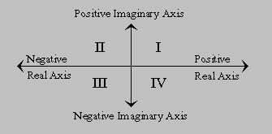

![[HARLEQUIN]](../Graphics/Harlequin-Small.gif)
![[Common Lisp HyperSpec (TM)]](../Graphics/HyperSpec-Small.gif)
![[Previous]](../Graphics/Prev.gif)
![[Up]](../Graphics/Up.gif)
![[Next]](../Graphics/Next.gif)
Many of the irrational and transcendental functions are multiply defined in the complex domain; for example, there are in general an infinite number of complex values for the logarithm function. In each such case, a principal value must be chosen for the function to return. In general, such values cannot be chosen so as to make the range continuous; lines in the domain called branch cuts must be defined, which in turn define the discontinuities in the range. Common Lisp defines the branch cuts, principal values, and boundary conditions for the complex functions following ``Principal Values and Branch Cuts in Complex APL.'' The branch cut rules that apply to each function are located with the description of that function.
The next figure lists the identities that are obeyed throughout the applicable portion of the complex domain, even on the branch cuts:
sin i z = i sinh z sinh i z = i sin z arctan i z = i arctanh z cos i z = cosh z cosh i z = cos z arcsinh i z = i arcsin z tan i z = i tanh z arcsin i z = i arcsinh z arctanh i z = i arctan z
Figure 12-9. Trigonometric Identities for Complex Domain
The quadrant numbers referred to in the discussions of branch cuts are as illustrated in the next figure.

Figure 12-10. Quadrant Numbering for Branch Cuts
![[Starting Points]](../Graphics/Starting-Points.gif)
![[Contents]](../Graphics/Contents.gif)
![[Index]](../Graphics/Index.gif)
![[Symbols]](../Graphics/Symbols.gif)
![[Glossary]](../Graphics/Glossary.gif)
![[Issues]](../Graphics/Issues.gif)